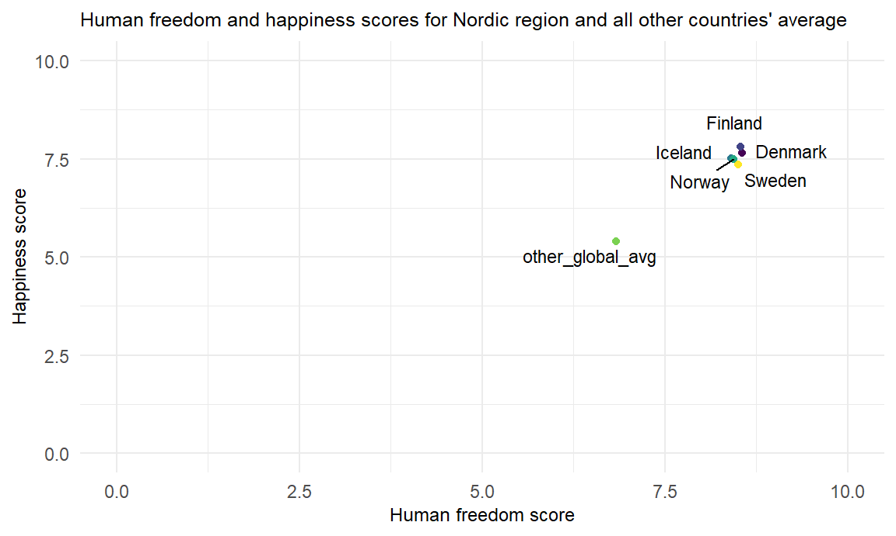

Nordic Exceptionalism

“Nordic exceptionalism” is a concept that seeks to describe why Nordic countries tend to be among the happiest or most satisfied in the world. Including conclusions that Nordic countries serve as examples of the successful welfare state - noting that these countries tend to offer high levels of social support to their citizens at the cost of, for example, higher taxes (1). We consider five countries when looking at the Nordic region: Denmark, Norway, Sweden, Finland, and Iceland.
On this page we’ll be examining potential differences in happiness among Nordic countries, and to the rest of the world - as well as different measures of freedom, asking how measures of freedom in these countries may play into this narrative.
Comparing Nordic Countries’ Happiness and Freedom Scores
# Creating Nordic only dataset
nordic_only =
read_csv("./data/merged_df.csv") %>%
filter(countries %in% c("Denmark", "Norway", "Sweden",
"Finland", "Iceland")) %>%
select(-X1)
# Creating dataset with all other countries
global_other = read_csv("./data/merged_df.csv") %>%
select(-X1) %>%
subset(countries != "Denmark" & countries != "Norway" &
countries != "Sweden" & countries != "Finland" &
countries != "Iceland")
#Getting averages across dataframes
nordic_averages = summarise_all(nordic_only, mean)
global_averages = summarise_all(global_other, mean, na.rm = TRUE)
#Removing NAs in 'countries' column from last step
nordic_averages[is.na(nordic_averages)] = 0
global_averages[is.na(global_averages)] = 1
#Binding dataframes
nordic_compare =
rbind(nordic_only, nordic_averages, global_averages) %>%
mutate(
countries = as.character(countries),
countries =
str_replace(countries, "0", "nordic_avg"),
countries =
str_replace(countries, "1", "other_global_avg")
)nordic_compare %>%
select(countries, happiness_score, human_freedom_score,
personal_freedom_score, economic_freedom_score) %>%
knitr::kable()| countries | happiness_score | human_freedom_score | personal_freedom_score | economic_freedom_score |
|---|---|---|---|---|
| Denmark | 7.645600 | 8.560000 | 9.238444 | 7.890000 |
| Finland | 7.808700 | 8.530000 | 9.268558 | 7.800000 |
| Iceland | 7.504500 | 8.410000 | 9.084634 | 7.740000 |
| Norway | 7.488000 | 8.440000 | 9.259625 | 7.620000 |
| Sweden | 7.353500 | 8.500000 | 9.445978 | 7.560000 |
| nordic_avg | 7.560060 | 8.488000 | 9.259448 | 7.722000 |
| other_global_avg | 5.402739 | 6.837006 | 6.904132 | 6.769681 |
The above table demonstrates happiness and freedom scores for the five Nordic countries. Note that the human freedom score is a composite of the economic and social freedom measurements. We can also compare these to the average scores for the all other countries in the world. On average it appeards that Nordic countries have particularly higher ‘personal freedom’ scores compared to the rest of the world.
nordic_compare %>%
subset(countries != "nordic_avg") %>%
ggplot(aes(x = human_freedom_score, y = happiness_score)) +
geom_point(aes(color = countries), show.legend = FALSE) +
geom_text_repel(aes(label = countries), size = 3) +
ylim(min = 0, max = 10) +
xlim(min = 0, max = 10) +
labs(
title = "Human freedom and happiness scores for Nordic region and all other countries' average",
y = "Happiness score",
x = "Human freedom score"
) +
theme(plot.title = element_text(size = 9.5),
axis.title = element_text(size = 9)
)
From the above table and plot it appears that Nordic countries are fairly homogenous on these measures of happiness and freedom - and on average score higher compared to the rest of the world.
Considering different sub indicators of freedom:
nordic_compare %>%
select(countries, religion, association, assembly, rule_of_law, homicide, disapperances_conflicts_and_terrorism, inheritance_rights, size_of_government) %>%
knitr::kable()| countries | religion | association | assembly | rule_of_law | homicide | disapperances_conflicts_and_terrorism | inheritance_rights | size_of_government |
|---|---|---|---|---|---|---|---|---|
| Denmark | 7.702222 | 10.000000 | 10.000000 | 8.687101 | 9.520000 | 10.000000 | 10.000000 | 4.707251 |
| Finland | 7.901482 | 10.000000 | 10.000000 | 8.639248 | 9.520000 | 9.903175 | 10.000000 | 4.711377 |
| Iceland | 8.122222 | 10.000000 | 10.000000 | 7.757267 | 9.640000 | 10.000000 | 10.000000 | 5.811087 |
| Norway | 7.407407 | 10.000000 | 10.000000 | 8.556488 | 9.800000 | 10.000000 | 10.000000 | 4.927812 |
| Sweden | 8.884815 | 10.000000 | 10.000000 | 8.539644 | 9.560000 | 9.839592 | 10.000000 | 4.542765 |
| nordic_avg | 8.003630 | 10.000000 | 10.000000 | 8.435950 | 9.608000 | 9.948553 | 10.000000 | 4.940059 |
| other_global_avg | 7.459531 | 7.442748 | 7.003817 | 5.002351 | 7.575841 | 8.729223 | 6.645161 | 6.498934 |
The above table demonstrates measures of selected indicators that contribute to the economic and personal freedome scores. We compare these indicators across Nordic countries, as well as to averages from the rest of the world. Definitions for these indicators can be found in our “About” page, under “HFI Indicators Defined”.
nordic_compare %>%
select(-happiness_score) %>%
pivot_longer(
human_freedom_score:size_of_government,
names_to = "freedom_subgroup",
values_to = "score"
) %>%
filter(str_detect(freedom_subgroup,
"religion|rule_of_law|homicide|size_of_government")) %>%
mutate(
freedom_subgroup =
fct_relevel(freedom_subgroup,
"religion", "rule_of_law", "homicide",
"size_of_government"),
countries =
fct_relevel(countries,
"Denmark", "Finland", "Iceland",
"Norway", "Sweden", "nordic_avg",
"other_global_avg")
) %>%
ggplot(aes(x = countries,
y = score, fill = freedom_subgroup)) +
geom_bar(stat = "identity", color = "black",
position = position_dodge()) +
ylim(min = 0, max = 10) +
labs(
title = "Indicator scores from freedom sub-categories for Nordic countries, and averages of all other countries"
) +
theme(
plot.title = element_text(size = 8.5),
legend.text = element_text(size = 7),
legend.title = element_text(size = 8),
axis.title = element_text(size = 9),
axis.text.x = element_text(size = 8, angle = 25, hjust = 1)
)From the above graph and table we can see that Nordic countries appear to be fairly similar on these different sub indicators of freedom. Looking at the other global average scores (excludes the Nordic region), it appears on average that Nordic countries tend to have higher ‘rule of law’ and ‘homicide’ freedom scores, and a lower ‘size of government’ score.
Statistical Testing: Nordic region vs Other countries
We carried out a two-sample t-test to see whether the mean difference in happiness scores, as well as mean difference in human freedom scores, between Nordic countries and the rest of the world are statistically significant.
By doing this we are treating all Nordic countries as one group. From the above visualizations, it appears that countries within the Nordic country are fairly similar on happiness and freedom scores. We note that preferably we would perform a global (ANOVA) test to verify whether or not at least one of the Nordic countries differs from the rest to a statistically significant degree. However, we are limited by the available data and the lack of information on within group (country) variance.
# Reformatting data for tests and visuals
merge_df_test = read_csv("./data/merged_df.csv") %>%
select(-X1) %>%
select(countries, happiness_score,
human_freedom_score) %>%
mutate(
countries = case_when(
countries == "Denmark" ~ "nordic",
countries == "Norway" ~ "nordic",
countries == "Sweden" ~ "nordic",
countries == "Finland" ~ "nordic",
countries == "Iceland" ~ "nordic"
)) %>%
mutate(countries = as.character(countries))
#Labeling NA's from prior step to represent all 'other' countries
merge_df_test$countries[is.na(merge_df_test$countries)] = "other"Comparing mean happiness and freedom scores between Nordic and all other countries:
plot_freedom =
merge_df_test %>%
ggplot(aes(y = human_freedom_score,
x = countries,
fill = countries)) +
geom_boxplot(stat = "boxplot", show.legend = FALSE) +
labs(y = "Human freedom score") +
ylim(min = 0, max = 10) +
theme(
axis.title = element_text(size = 8),
axis.text = element_text(size = 8)
)
plot_happy =
merge_df_test %>%
ggplot(aes(y = happiness_score,
x = countries,
fill = countries)) +
geom_boxplot(stat = "boxplot", show.legend = FALSE) +
labs(y = "Happiness score") +
ylim(min = 0, max = 10) +
theme(
axis.title = element_text(size = 8),
axis.text = element_text(size = 8)
)
plot_happy | plot_freedom
From the above graph we can tell that there appears to be a greater spread of data in the ‘all other countries’ group for both happiness and human freedom scores. We formally assess whether our two group variances have statistically significant differences in the below section.
The below tables summaries the count, mean, and standard deviation for 1) happiness and 2) human freedom scores for our two groups of all Nordic countries and the rest of the world.
Checking assumption of group variance homogeneity
res.ftest = var.test(happiness_score ~ countries, data = merge_df_test)
print(res.ftest)##
## F test to compare two variances
##
## data: happiness_score by countries
## F = 0.026679, num df = 4, denom df = 147, p-value = 0.002783
## alternative hypothesis: true ratio of variances is not equal to 1
## 95 percent confidence interval:
## 0.009282815 0.221427779
## sample estimates:
## ratio of variances
## 0.02667904- When checking the variance in Nordic versus all other countries happiness scores, the p-value of <0.05 in the output above indicates that our group variances are significantly different and we cannot assume equal variance in the t-test.
res.ftest = var.test(human_freedom_score ~ countries, data = merge_df_test)
print(res.ftest)##
## F test to compare two variances
##
## data: human_freedom_score by countries
## F = 0.0032982, num df = 4, denom df = 156, p-value = 4.387e-05
## alternative hypothesis: true ratio of variances is not equal to 1
## 95 percent confidence interval:
## 0.001149647 0.027365716
## sample estimates:
## ratio of variances
## 0.003298164- When checking the variance in Nordic versus all other countries freedom scores, the p-value of <0.05 in the output above indicates that our group variances are significantly different and we cannot assume equal variance in the t-test.
Two sample t-test
Results from two sample t-test comparing overall happiness in Nordic vs other countries:
t.test(happiness_score ~ countries,
data = merge_df_test, var.equal = FALSE) %>%
broom::tidy() %>%
select(estimate, statistic, p.value) %>%
knitr::kable()| estimate | statistic | p.value |
|---|---|---|
| 2.157321 | 18.49376 | 0 |
Results from two sample t-test comparing human freedom in Nordic vs other countries:
t.test(human_freedom_score ~ countries,
data = merge_df_test, var.equal = FALSE) %>%
broom::tidy() %>%
select(estimate, statistic, p.value) %>%
knitr::kable()| estimate | statistic | p.value |
|---|---|---|
| 1.650994 | 18.17931 | 0 |
Per the above the results, both t-tests demonstrate p-values of < 0.05.
We have sufficient evidence to conclude:
Mean citizen happiness in Nordic countries is significantly different from the rest of the world, and;
Mean human freedom in Nordic countries is significantly difference from the rest of the world.
Future analyses examining Nordic countries could consider and control for potential confounders, carry out comparisons between the Nordic region versus other regions of the globe, or look at longitudinal data.
References:
- Frelle-Petersen, C., Hein, A., & Christiansen, M. (2020). The Nordic social welfare model: Lessons for reform [PDF]. Deloitte Insights. https://www2.deloitte.com/content/dam/insights/us/articles/43149-the-nordic-social-welfare-model/DI_The-Nordic-social-welfare-model.pdf